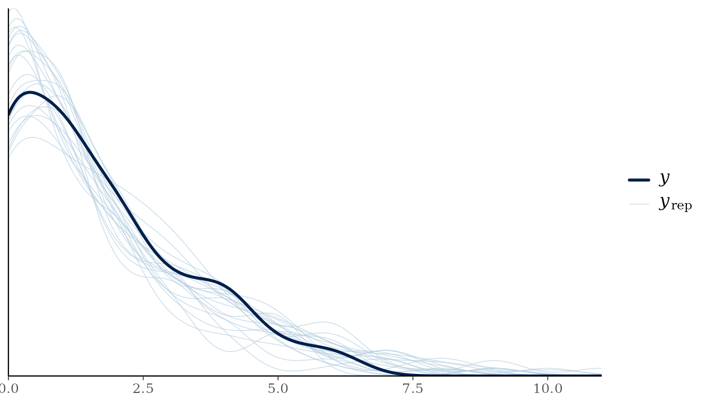
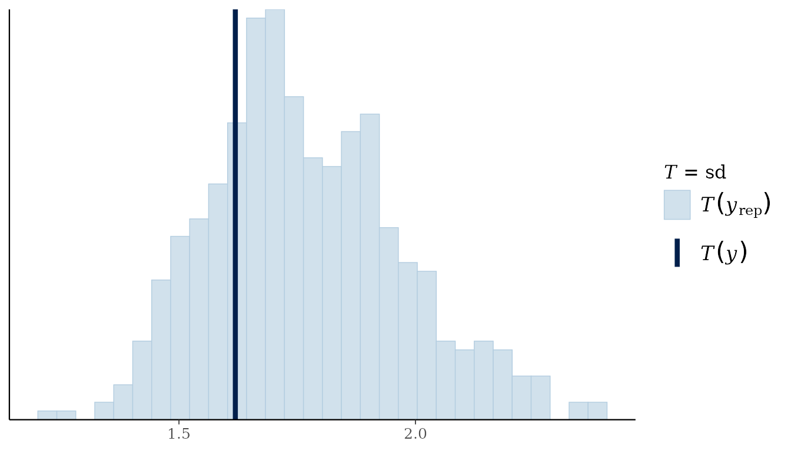
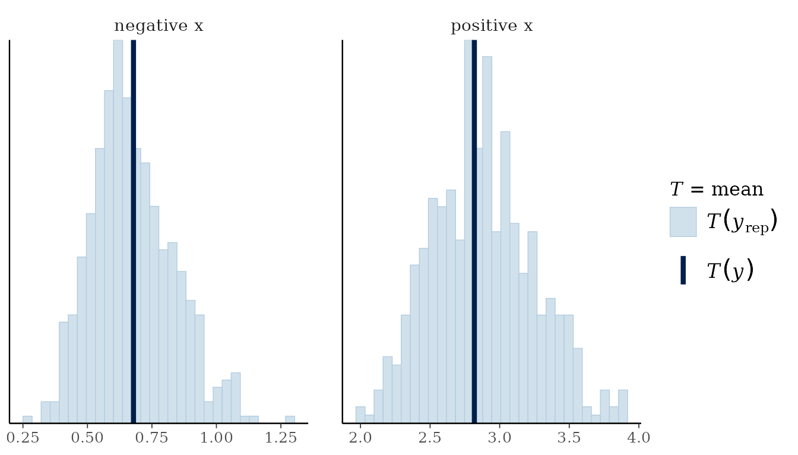
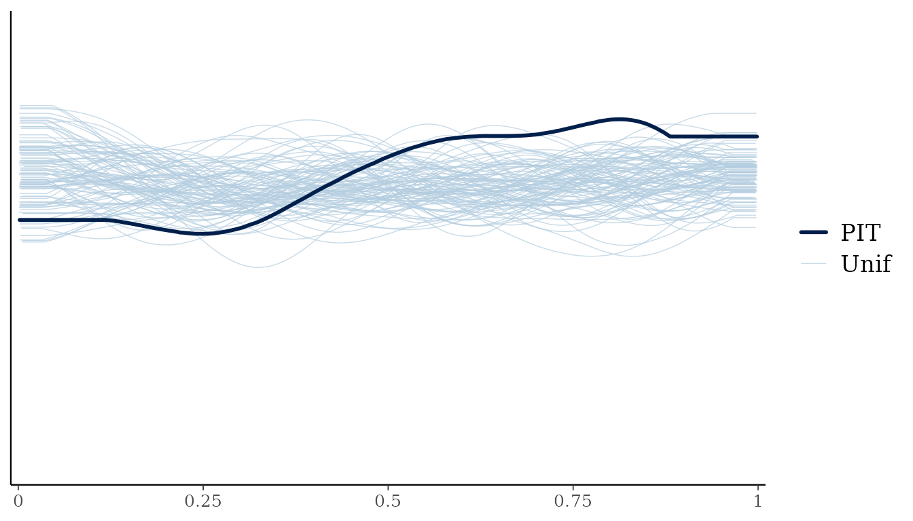

Posterior predictive checks and approximate leave-one-out comparisons
Gavin L. Simpson
Source:vignettes/articles/bayesplot-loo.Rmd
bayesplot-loo.Rmd{gratia} provides methods for checking a fitted model with
{bayesplot} and comparing its predictive performance with {loo}. The
bayesplot methods compare observed responses with responses simulated
from the model. The loo methods approximate how well the model predicts
each observation when it is left out of fitting. You can also use
gratia’s log_lik(), appraise() and
posterior_predictive_plot() without either optional
package.
Some bayesplot plots, including error_binned and the
leave-one-out PIT plots, also require {rstantools}. Use
install.packages("rstantools") to install it.
We simulate 100 independent Poisson counts with a curved relationship
between x and the log expected count:
library("gratia")
load_mgcv()
set.seed(278)
dat <- data.frame(x = runif(100, -1, 1))
dat$y <- rpois(nrow(dat), exp(.3 + sin(3 * dat$x)))We fit a Poisson model with a linear effect of x and
another with a smooth effect. Comparing them will show whether the extra
flexibility improves prediction.
linear <- gam(y ~ x, data = dat, family = poisson(), method = "REML")
smooth <- gam(y ~ s(x, k = 7), data = dat, family = poisson(), method = "REML")Compare observed responses with simulated datasets
For each coefficient draw, a posterior predictive check generates another response at every fitting observation. The variation between these replicated datasets includes coefficient uncertainty and response variation. We first compare response distributions, then compare their standard deviations:
bayesplot::pp_check(smooth, type = "dens_overlay", n_draws = 20, seed = 42)
bayesplot::pp_check(smooth, type = "stat", stat = "sd", n_draws = 500, seed = 42)
#> `stat_bin()` using `bins = 30`. Pick better value `binwidth`.
The density overlay compares the overall distribution of counts. The
second plot shows whether the observed standard deviation is typical of
the replicated datasets. You can supply a function to stat,
such as function(y) mean(y == 0) to compare the proportion
of zero counts. To display simulated responses alone, use
prefix = "ppd".
Pooling observations can hide a discrepancy confined to part of the
covariate range. We compare mean counts separately for negative and
positive x. The grouping vector must follow the order of
the observations used to fit the model; a grouping variable from the
model data can instead be supplied by name.
bayesplot::pp_check(smooth, type = "stat_grouped", stat = "mean", n_draws = 500,
group = factor(dat$x > 0, labels = c("negative x", "positive x")), seed = 42)
#> Note: in most cases the default test statistic 'mean' is too weak to detect anything of interest.
#> `stat_bin()` using `bins = 30`. Pick better value `binwidth`.
Rows excluded from the fit because of missing values are also
excluded from these checks. For binomial models, plots from bayesplot
use success counts, and the posterior predictive plots in gratia use
proportions. Use response to select a response from a
multivariate model (for example, "response1") or a family
component from a grouped-family model (for example,
"component2"). For gamm() and
gamm4() fits, conditioning chooses whether
checks use fitted group effects, new group effects or the extracted GAM
component. See the model diagnostics
article for these comparisons.
Calculate log likelihoods at coefficient draws
log_lik() evaluates how likely each observed response is
at each coefficient draw. It returns log densities for continuous
responses and log probabilities for discrete responses. Rows are
posterior draws and columns are the observations used to fit the model.
For observation i and draw s in the unweighted
Poisson example, the entry is
dpois(y[i], lambda = mu[s, i], log = TRUE).
ll <- gratia::log_lik(smooth, n_draws = 2000, seed = 42)
dim(ll)
#> [1] 2000 100
head(attr(ll, "observation"))
#> [1] 1 2 3 4 5 6
attr(ll, "gratia")
#> $method
#> [1] "gaussian"
#>
#> $n_draws
#> [1] 2000
#>
#> $chains
#> [1] 1
#>
#> $approximation
#> [1] "Gaussian coefficient posterior approximation"
#>
#> $fixed_parameters
#> [1] "Smoothing parameters and family parameters outside the coefficient vector remain at fitted values."
#>
#> $unconditional
#> [1] FALSE
#>
#> $posterior_correction
#> [1] FALSEThese values include the likelihood’s normalising constants and any fitting weights. Smoothing penalties affect the coefficient draws and are excluded from the likelihood calculation. A multivariate normal observation contributes one joint log density for its response vector. In a grouped-family fit, each observation contributes a value from its own family.
Compare predictive performance with loo
Leave-one-out cross-validation (LOO) evaluates how well each
observation is predicted using the other observations. The loo package
approximates these predictions with Pareto-smoothed importance sampling
(PSIS), which reweights the existing coefficient draws. In this example
it approximates a refit that holds the smoothing parameter fixed.
elpd_loo estimates expected log predictive density. Higher
values indicate better estimated predictive performance when models use
the same observations and response scale. We compare the linear and
smooth models and inspect the quality of the approximation for the
smooth model.
loo_linear <- loo::loo(linear, n_draws = 2000, seed = 42)
loo_smooth <- loo::loo(smooth, n_draws = 2000, seed = 42)
loo::loo_compare(loo_linear, loo_smooth)
#> model elpd_diff se_diff p_worse diag_diff diag_elpd
#> model2 0.0 0.0 NA
#> model1 -14.0 4.2 1.00
loo::pareto_k_table(loo_smooth)
#>
#> All Pareto k estimates are good (k < 0.7).loo_compare() ranks models by their estimated predictive
performance. The top model has elpd_diff = 0. Negative
values indicate lower scores relative to that model.
se_diff is the standard error of the estimated difference.
Here the smooth model (model2, the second argument) ranks
first. None of its Pareto-k values exceed loo’s threshold for reliable
reweighting.
The methods return ordinary loo objects, so loo’s plotting,
model-comparison and weighting tools are available. For an already
extracted matrix of independent Gaussian coefficient draws, the
equivalent calculation is loo::loo(ll, r_eff = 1).
loo::waic(smooth, n_draws = 2000, seed = 42) also works.
Model methods evaluate likelihoods one observation at a time, avoiding a
full draws-by-observations matrix unless saved PSIS weights are
requested.
Large Pareto-k values flag observations whose leave-one-out predictions are hard to approximate by reweighting. Check for these values and for loo warnings in both models before interpreting a difference. If reweighting is unreliable, refit the model with the relevant observations left out or run a separate cross-validation analysis. loo’s Pareto-k diagnostics
The leave-one-out probability integral transform (LOO-PIT) measures where each observation falls in its own leave-one-out predictive distribution. If those distributions are well calibrated, the PIT values should be approximately uniform. The calculation uses randomisation to handle ties for counts. The overlay compares the distribution of the resulting PIT values with simulated uniform references.
bayesplot::pp_check(smooth, type = "loo_pit_overlay", n_draws = 2000, seed = 42)
#> NOTE: The kernel density estimate assumes continuous observations and is not
#> optimal for discrete observations.
Understand the posterior approximation
By default, gratia draws coefficients jointly from {mgcv}’s Gaussian approximation. For a distributional GAM, this includes coefficients for each distribution parameter. For multivariate-normal likelihoods, it also includes the fitted precision-matrix coefficients. Scale, shape and other parameters outside the coefficient vector stay at fitted values, as do smoothing parameters.
For Gaussian draws, unconditional = TRUE uses mgcv’s
corrected coefficient covariance when available to approximately account
for uncertainty in the smoothing parameters. Pareto-k values assess the
stability of the reweighting. The accuracy of the Gaussian approximation
to the coefficient posterior is a separate question.
Pass coefficient-sampler arguments through
sampling_args. The first calls below request the corrected
covariance; the last uses four Metropolis–Hastings chains to draw
coefficients:
# Extra sampler arguments are kept separate from loo and plotting arguments.
loo::loo(smooth, n_draws = 2000, seed = 42,
sampling_args = list(unconditional = TRUE))
bayesplot::pp_check(smooth, n_draws = 50, seed = 42,
sampling_args = list(unconditional = TRUE))
# Four chains share the total retained count, with separate burn-in.
loo::loo(smooth, n_draws = 2000, seed = 42,
sampling_args = list(method = "mh", chains = 4, burnin = 1000))For supplied coefficient draws, use
method = "user", draws = B in log_lik(), or
place those arguments in sampling_args for loo and
bayesplot. LOO uses the chain and iteration mapping stored by gratia’s
samplers. For an unlabelled matrix, supply chain_id or an
explicit r_eff; gratia cannot infer chain boundaries from
its dimensions. A supplied chain_id must agree with stored
metadata.
n_draws is the total retained count, so 2,000 draws over
four chains retains 500 draws per chain. Likelihood and LOO/WAIC
wrappers default to 4,000 draws; bayesplot uses 50 for ordinary checks
and 4,000 for leave-one-out plots. Supplied matrices determine their own
count and chains. These wrappers reject the obsolete n
argument, and inactive sampler controls produce errors. Use
diagnostics = TRUE directly in log_lik(), or
in sampling_args for LOO and bayesplot, to retain
coefficient diagnostics. The likelihood matrix also supports
as_mcmc_draws() for diagnostics of its observation-wise log
densities.
log_lik(), loo::loo() and
loo::waic() cover supported GAMs, BAMs and {scam} fits for
which the responses are independent given the model coefficients. Full
gamm() and gamm4() fits, BAMs with residual
correlation, quasi families, Cox partial likelihoods and censored
observation processes are outside this likelihood support. For ordinary
posterior predictive checks, the supported model classes and
conditioning options vary with the plot type. diagnostic_support
With random-effect smooths, leaving out one observation at a time assesses prediction within the fitted groups when each group has other observations. To assess prediction for new groups, leave out entire groups.
The script inst/validation/loo-refits.R compares PSIS
results with explicit leave-one-out refits in Gaussian, Poisson and
binomial examples. Some refits hold the smoothing and other family
parameters at their full-data estimates. Others re-estimate them in each
refit.